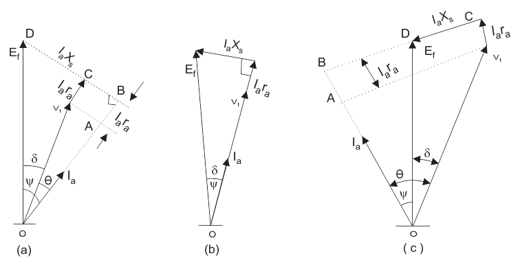
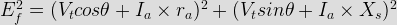
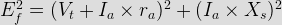
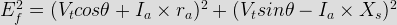

Ef which denotes excitation voltage
Vt which denotes terminal voltage
Ia which denotes the armature current
θ which denotes the phase angle between Vt and Ia
ᴪ which denotes the angle between the Ef and Ia
δ which denotes the angle between the Ef and Vt
ra which denotes the armature per phase resistance
In order to draw the phasor diagram we will use Vt as reference .Consider these two important points which are written below:
(1) We already know that if a machine is working as a synchronous generator then direction of Ia will be in phase to that of the Ef.
(2) Phasor Ef is always ahead of Vt.
These two points are necessary for making the phasor diagram of synchronous generator. Given below is the phasor diagram of synchronous generator:
In this phasor diagram we have drawn the direction of the Ia is in phase with that of the Ef as per the point number 1 mentioned above. Now let us derive expression for the excitation emf in each case. We have three cases that are written below:
(a) Generating operation at lagging power factor
(b) Generating operation at unity power factor
(c) Generating operation at leading power factor
Given below are the phasor diagrams for all the operations.

(a) Generating operation at lagging power factor: We can derive the expression for the Ef by first taking the component of the Vt in the direction of Ia. Component of Vt in the direction of Ia is VtcosΘ, hence the total voltage drop is (VtcosΘ+Iara) along the Ia. Similarly we can calculate the voltage drop along the direction perpendicular to Ia. The total voltage drop perpendicular to Ia is (Vtsinθ+IaXs). With the help of triangle BOD in the first phasor diagram we can write the expression for Ef as

(b) Generating operation at unity power factor: Here also we can derive the expression for the Ef by first taking the component of the Vt in the direction of Ia. But in this case the value of theta is zero and hence we have ᴪ=δ. With the help of triangle BOD in the second phasor diagram we can directly write the expression for Ef as

(c) Generating operation at leading power factor: Component in the direction of Ia is VtcosΘ. As the direction of Ia is same to that of the Vt thus the total voltage drop is (VtcosΘ+Iara). Similarly we can write expression for the voltage drop along the direction perpendicular to Ia. The total voltage drop comes out to be (Vtsinθ-IaXs). With the help of triangle BOD in the first phasor diagram we can write the expression for Ef as

 by
by